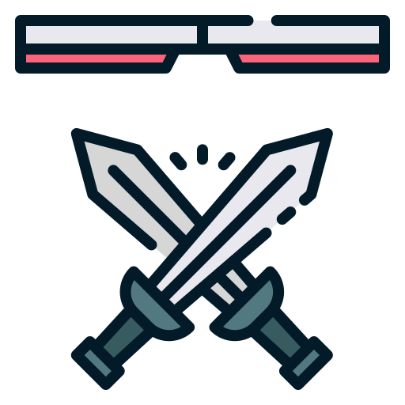
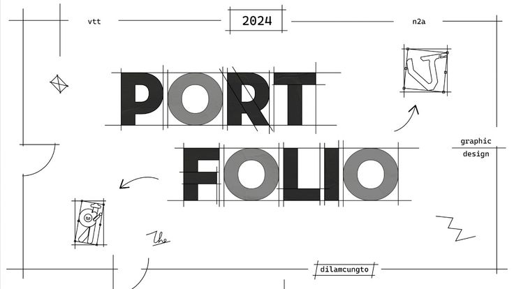
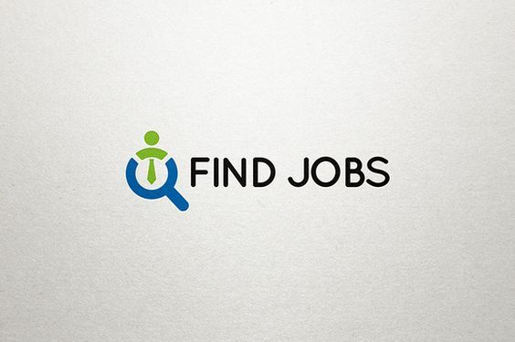

Een selectie van projecten waar ik trots op ben.
Een snelle en interactieve tafeltennisgame waarin spelers hun reflexen, precisie en timing op de proef stellen. Neem het op tegen een vriend of een AI-tegenstander en probeer als eerste de overwinning binnen te halen door slim te spelen en razendsnel te reageren.

Een strategische turn-based battle game waarin je een team van drie helden samenstelt om het op te nemen tegen drie vijanden. Kies je team zorgvuldig, gebruik de unieke vaardigheden van elke held en ontwikkel de beste strategie om je tegenstanders te verslaan. De strijd eindigt pas wanneer één team volledig is uitgeschakeld.

Een gebruiksvriendelijke chatapp waarmee spelers eenvoudig met elkaar kunnen communiceren. Verstuur direct berichten, deel afbeeldingen, video's en bestanden, en blijf verbonden met vrienden tijdens of buiten het gamen. Met een overzichtelijke interface en snelle berichtverwerking biedt de app een betrouwbare en interactieve communicatie-ervaring.

Een modern gamingplatform waar spelers eenvoudig verschillende games kunnen ontdekken, spelen en beheren vanuit één centrale omgeving. Maak verbinding met andere spelers, houd je voortgang bij, bekijk leaderboards en geniet van een soepele game-ervaring. Het platform is ontworpen om nieuwe games en functies eenvoudig toe te voegen, zodat er altijd iets nieuws te beleven is.

Een moderne en responsieve persoonlijke website die mijn vaardigheden, projecten en ervaring als softwareontwikkelaar presenteert. Bezoekers kunnen meer te weten komen over mijn technische expertise, afgeronde projecten en contact met mij opnemen. Het portfolio is ontworpen met een focus op gebruiksvriendelijkheid, prestaties en een professionele uitstraling.
Een slimme taxi-app die passagiers en chauffeurs met elkaar verbindt voor een snelle en betrouwbare vervoerservaring. Gebruikers kunnen eenvoudig een rit aanvragen, de locatie van hun chauffeur live volgen, de geschatte aankomsttijd bekijken en veilig betalen. De app biedt een intuïtieve interface en is ontworpen voor efficiënt en comfortabel vervoer.

Een online platform waar gebruikers kleine opdrachten kunnen plaatsen, vinden en uitvoeren. Van grafisch ontwerp en programmeren tot schrijven en administratieve taken: freelancers kunnen hun vaardigheden aanbieden en klanten vinden eenvoudig de juiste persoon voor hun project. Met een overzichtelijk systeem voor opdrachten, communicatie en betalingen biedt het platform een veilige en efficiënte manier om samen te werken.